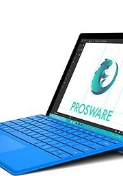

ife.baidu.com
ABOUT
TECHNOLOGE
About technologe every one has the difference ideas
700
3.2
css
crazy animals联想Y480系列
联想是国内比较知名的电脑品牌，联想Y480系列电脑在2014年上市了十多台。这个系列的电脑属于比较稳当型的，属于家庭普通版，比较耐用，主频、制程工艺、内存容量、硬盘容量、屏幕分辨率都是相当高的，14寸的屏幕设置，也比较合适。不管是打游戏、看电视还是下软件都是比较好的，这个系列的电脑报价在4000-7500不等，算是中等价位的电脑。
惠普g6-1303tx
惠普也是大家比较熟悉的品牌，这款惠普g6-1303tx拥有15.6英寸的屏幕。CPU型号是Intel 酷睿i5 2450M，主频2.5GHZ，内存容量4GB，有独立的显卡集成摄像头，最新的操作系统。因为是在年初上市的，所以现在市场报价也仅在四千元左右。这款电脑比较适合男生，整体比较大气。所以现在市场报价也仅在四千元左右。这款电脑比较适合男生，整体比较大气。
Acer Aspire S3-951
超薄的电脑是现在市面上比较流行的，宏基的这款电脑就属于是超波的，外观相当的精致。重量月1.4千克，13.3英寸的小屏幕，有4GB所谓容量。这款电脑比较适合女性，但是这款电脑没有光驱，但是在制作方面是比较精良的。市场报价在7700左右，价格算是比较高一些的电脑。所以现在市场报价也仅在四千元左右。这款电脑比较适合男生，整体比较大气。
THE TECHNOLOGE OF FRONT
前端技术领域
前端对于网站来说，通常是指，网站的前台部分包括网站的表现层和结构层。因此前端技术一般分为前端设计和前端开发，前端设计一般可以理解为网站的视觉设计，前端开发则是网站的前台代码实现，包括基本的HTML和CSS以及JavaScript/ajax，现在最新的高级版本HTML5、CSS3，以及SVG等。这三个是前端开发中最基本也是最必须的三个技能。前端的开发中，在页面的布局时， HTML将元素进行定义，CSS对展示的元素进行定位，再通过JavaScript实现相应的效果和交互。
指的是超文本标记语言 (Hyper Text Markup Language)，这个也是我们网页最常用普通的语言了，经历了多个版本的发展，已经发展到5.0版了，得力于W3C建立的标准和规范，已普遍升级到了XHTML，XHTML 指可扩展超文本标签语言（EXtensible HyperText Markup Language）， XHTML 于2000年的1月26日成为 W3C 标准，是更严格更纯净的 HTML 代码，XHTML 的目标是取代 HTML。XHTML 与 HTML 4.01 几乎是相同的，XHTML 是作为一种 XML 应用被重新定义的 HTML，是一个 W3C 标准。W3C 将 XHTML 定义为最新的HTML版本。所有新的浏览器都支持 XHTML。
级联样式表（Cascading Style Sheet）简称“CSS”，通常又称为“风格样式表（Style Sheet）”，它是用来进行网页风格设计的。比如，如果想让链接字未点击时是蓝色的，当鼠标移上去后字变成红色的且有下划线，这就是一种风格。通过设立样式表，可以统一地控制HTML中各标志的显示属性。级联样式表可以使人更能有效地控制网页外观。使用级联样式表，可以扩充精确指定网页元素位置，外观以及创建特殊效果的能力。
前端技术最新最炫酷的视觉效果
▲ 前端HTML............................静态页面
▲ 前端css.............................静态页面
▲ 前端javascript.......................动态交互
ONE TWO
THREE FORE FIVE
hellow world hellow world hellow world
“做了一天终于做完了，给自己小小的鼓励。后天还要考科一 加油”